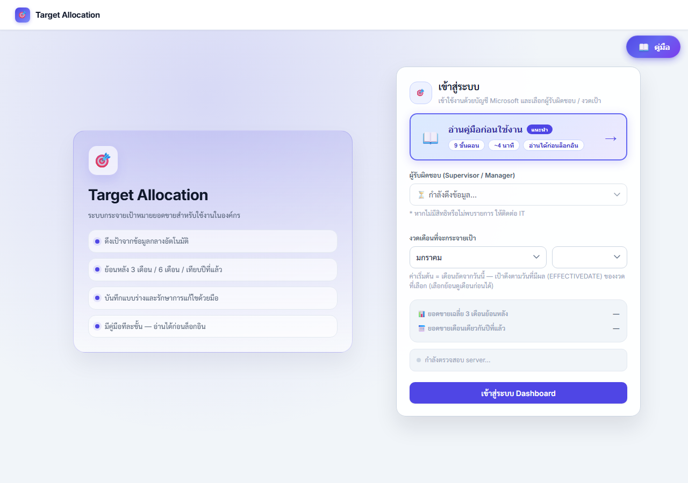
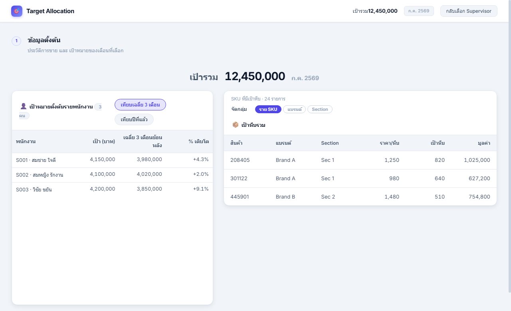
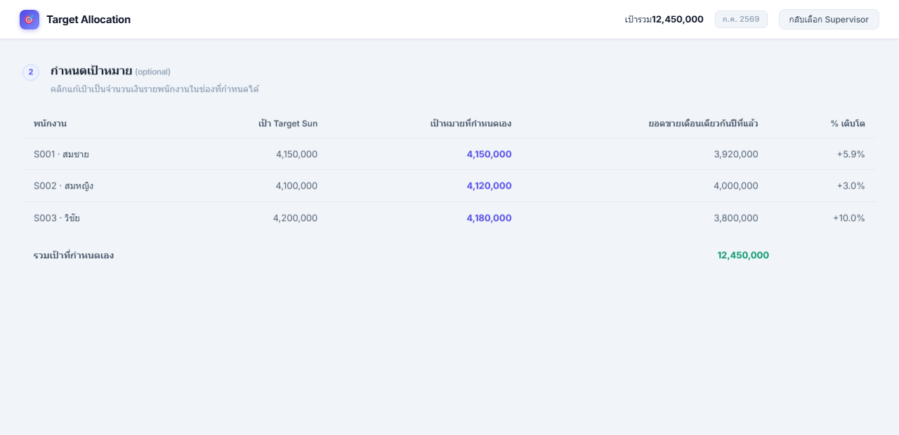
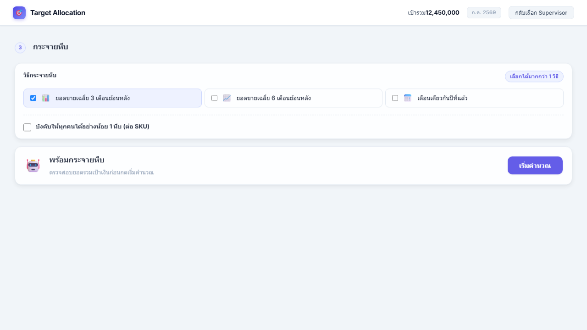
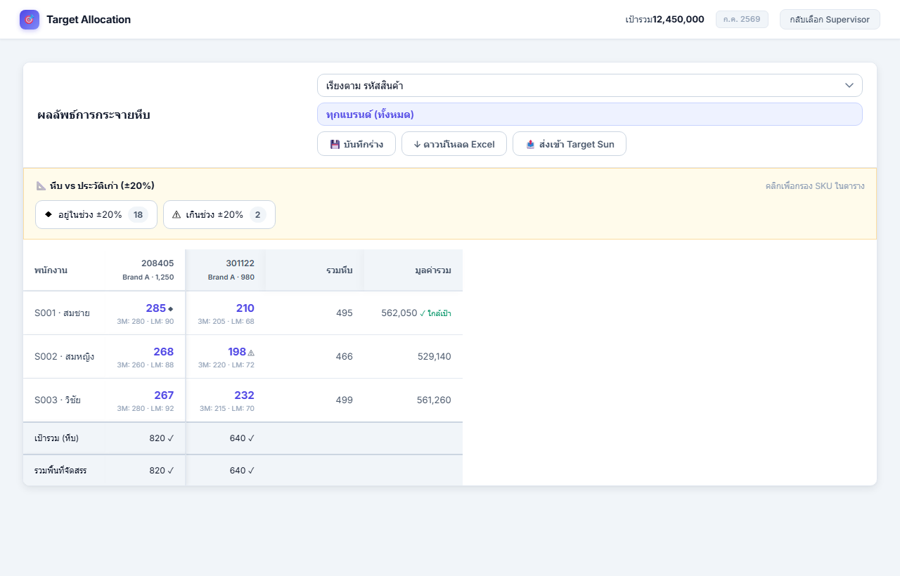
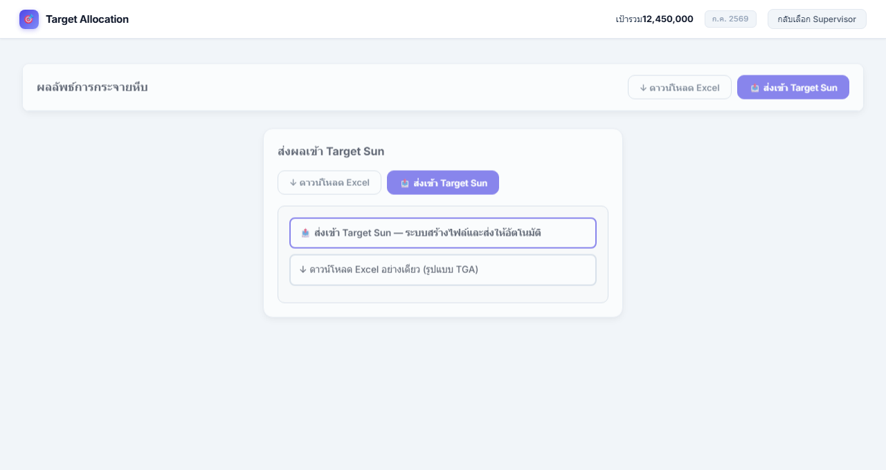

คู่มือการใช้งาน Target Allocation
ระบบกระจายเป้าหมาย (หีบ) ให้พนักงานขายรายคน
ทำตามลำดับด้านล่างทีละขั้น ระบบดึงข้อมูลจากข้อมูลกลางอัตโนมัติ
1. เข้าสู่ระบบ
- เปิด URL แอป: https://spc-ai.sahapat.com/allocation_target/
- (แนะนำ) กด อ่านคู่มือก่อนใช้งาน บนการ์ดเข้าสู่ระบบ (อ่านได้ก่อนล็อกอิน) หรือกดปุ่ม คู่มือ มุมขวาบน
- กด ล็อกอินด้วย Microsoft ด้วยบัญชีองค์กร
- รอ dropdown ผู้รับผิดชอบ (Supervisor / Manager) โหลดเสร็จ
- เลือกรหัสทีมที่ต้องการกระจายเป้า
- เลือก งวดเดือนที่จะกระจายเป้า (ค่าเริ่มต้นมักเป็นเดือนถัดจากวันนี้)
- กด เข้าสู่ระบบ Dashboard

2. ขั้นที่ 1: ข้อมูลตั้งต้น
- ดู เป้ารวม ด้านบน (ยอดเงินรวมของงวดที่เลือก)
- ตรวจตาราง พนักงาน: รหัส S/M, ชื่อ, เป้าเริ่มต้น
- ตรวจตาราง SKU (เป้าหีบ): รหัสสินค้า, แบรนด์, จำนวนหีบเป้ารวมต่อ SKU
- สลับแท็บ เทียบเฉลี่ย 3 เดือน / เทียบปีที่แล้ว เพื่อดูบริบทเป้า
- จัดกลุ่ม SKU เป็น ราย SKU · แบรนด์ · Section ตามต้องการตรวจ

3. ขั้นที่ 2: กำหนดเป้าหมาย (ไม่บังคับ)
ขั้นนี้ ข้ามได้ ถ้าใช้เป้า Target Sun ตามที่ระบบดึงมาโดยไม่แก้
- ดูคอลัมน์ เป้าหมายที่กำหนดเอง (ค่าเริ่มต้นเท่าเป้า Target Sun)
- คลิกช่องแล้วพิมพ์ปรับเป้าเงินรายคน (ถ้าต้องการ)
- ระบบคำนวณ % เติบโต ให้อัตโนมัติ
- ตรวจ ยอดรวมเป้าที่กำหนดเอง ด้านล่าง ควรใกล้เป้ารวม
เกณฑ์ยอดรวม
| ส่วนต่างจากเป้ารวม | ความหมาย |
|---|---|
| ไม่เกิน ~10 บาท | พร้อมกด เริ่มคำนวณ (ขั้น 4) |
| ไม่เกิน ~99 บาท | แจ้งเตือน แต่ยังกดคำนวณได้ |
| มากกว่านั้น | ปุ่ม เริ่มคำนวณ ปิด ต้องปรับให้รวมใกล้เป้ารวม |
ตัวเลือกเพิ่ม
- รีเซ็ตเป็น Target Sun: คืนค่าเป้าที่กำหนดเองทุกคน
- หักบิวเทรี่ยม: เปิดช่องหักยอดจากยอดปีที่แล้วก่อนคิด % เติบโต (ใส่เฉพาะคนที่ต้องหัก)
กรณีเติบโตติดลบ
ถ้าเป้าที่ตั้งทำให้ % เติบโตติดลบ ระบบจะขอ เหตุผล อย่างน้อย 8 ตัวอักษร ก่อนกดคำนวณ
(ถ้าเป้าเท่า Target Sun แล้วเติบโตติดลบอยู่ดี ไม่ต้องกรอกเหตุผล)

4. ขั้นที่ 3: กระจายหีบ
เลือกวิธีกระจาย
เลือกได้ มากกว่า 1 วิธี (ติ๊กการ์ดด้านบน):
| วิธี | ความหมาย |
|---|---|
| ยอดขายเฉลี่ย 3 เดือนย้อนหลัง (L3M) | แบ่งตามสัดส่วนยอด 3 เดือน (ค่าเริ่มต้น) |
| ยอดขายเฉลี่ย 6 เดือนย้อนหลัง (L6M) | แบ่งตามสัดส่วนยอด 6 เดือน |
| เดือนเดียวกันปีที่แล้ว (LY) | แบ่งตามยอดเดือนเดียวกันปีก่อน |
| ผลักดันพนักงาน (PUSH) | เน้นคนที่ขายน้อย ได้สัดส่วนมากขึ้น |
ถ้าเลือก หลายวิธี ให้กำหนด แบรนด์ → วิธี ในกล่องด้านล่าง
ตัวเลือกเพิ่ม (checkbox)
- บังคับให้ทุกคนได้อย่างน้อย 1 หีบ (ต่อ SKU): เมื่อเป้าหีบ SKU นั้น ≥ จำนวนพนักงาน
- SKU ใหม่แบ่งเท่ากัน: SKU ที่ทั้งทีมไม่มียอด 12 เดือน แบ่งเท่าทุกคน
กดคำนวณ
- เลือกวิธีกระจาย (และแบรนด์→วิธี ถ้าเลือกหลายวิธี)
- ติ๊ก checkbox ตามต้องการ
- ตรวจว่ายอดรวมเป้าเงินขั้น 2 พร้อม (ปุ่ม เริ่มคำนวณ เปิด)
- กด เริ่มคำนวณ แล้วรอ progress 4 ขั้น
- เมื่อเสร็จ ปุ่มเปลี่ยนเป็น คำนวณใหม่ (ใช้เมื่อเปลี่ยนวิธีหรือแก้เป้า)

5. อ่านตารางผลลัพธ์
หลังกด เริ่มคำนวณ จะเห็นส่วน ผลลัพธ์การกระจายหีบ อ่านจากบนลงล่างตามลำดับนี้
1) ปุ่มด้านบนตาราง
- เรียงตาม รหัสสินค้า / แบรนด์ / จำนวนหีบ / ราคา
- เลือกแบรนด์ ดูเฉพาะแบรนด์หนึ่ง หรือทุกแบรนด์
- 💾 บันทึกร่าง เก็บผลไว้ในเครื่อง · ↩️ Undo ย้อนการแก้ล่าสุด · ↓ Excel · 📤 ส่ง Target Sun
2) แถบ 📐 หีบ vs ประวัติเก่า (±20%)
อยู่ใต้ปุ่มด้านบน เหนือตาราง มี 2 ปุ่ม:
- ◆ (ตัวเลข) กดแล้วเห็นเฉพาะ SKU ที่หีบยังอยู่ในช่วง ±20% ของประวัติเก่า
- ⚠ (ตัวเลข) กดแล้วเห็นเฉพาะ SKU ที่เกินช่วง ±20% (มักเกิดหลังแก้ตัวเลขเอง)
กดปุ่มเดิมอีกครั้ง หรือกด แสดงทั้งหมด เพื่อยกเลิกกรอง · ถ้าตัวเลขเป็น 0 ปุ่มจะกดไม่ได้
3) ตารางหีบ
| ดูตรงไหน | หมายความว่า |
|---|---|
| แถว | พนักงานแต่ละคน |
| คอลัมน์ | SKU แต่ละตัว (หัวคอลัมน์มีรหัสสินค้า แบรนด์ ราค/หีบ) |
| ตัวเลขสีน้ำเงิน | จำนวนหีบที่ได้ คลิกแล้วแก้ได้ |
| ตัวเลขสีเทาใต้ลงมา | ประวัติยอดขาย (เฉลี่ย 3 เดือน, เดือนที่แล้ว, ปีที่แล้ว) |
| คอลัมน์ขวาสุด | รวมหีบและมูลค่ารวมของคนนั้น |
สัญลักษณ์ ◆ และ ⚠ (ในเซลล์หรือที่หัวคอลัมน์)
- ◆ หีบยังอยู่ในช่วง ±20% ของประวัติเก่า (ปกติหลังระบบคำนวณ)
- ⚠ หีบเกินช่วง ±20% (มักหลังแก้มือ)
มูลค่ารวมต่อคน (คอลัมน์ขวา): ✓ ใกล้เป้า = ห่างจากเป้าเงินไม่เกิน 1,000 บ. · ถ้า ขาด/เกิน X บาท = ยังห่างจากเป้าเงินมาก
4) แถวล่างสุดของตาราง
- เป้ารวม (หีบ) = เป้าหีบที่หัวหน้ากำหนดต่อ SKU
- รวมพื้นที่จัดสรร = หีบที่แบ่งให้พนักงานรวมกัน
- ควรเห็น ✓ สีเขียว ทุกคอลัมน์ (รวมหีบตรงเป้า) ก่อนส่ง Target Sun
5) แก้หีบด้วยมือ
- คลิกตัวเลขสีน้ำเงิน → พิมพ์จำนวนใหม่ → คลิกนอกช่อง
- กด ↩️ Undo ถ้าต้องการย้อน
- กด 💾 บันทึกร่าง เก็บไว้ในเครื่อง (ยังไม่ใช่การส่งเข้า Target Sun)

6. ส่งผล (Excel และ Target Sun)
ดาวน์โหลด Excel (สรุปผล Dashboard)
- กด ↓ ดาวน์โหลด Excel
- เลือกแบรนด์ (หรือ ALL)
- ได้ไฟล์สรุปผลสำหรับเก็บ/ตรวจสอบ
ส่งเข้า Target Sun
- กด 📤 ส่งเข้า Target Sun
- จะมีหน้าต่างยืนยันขึ้นมา ให้เลือก ส่งเข้า Target Sun ระบบสร้างไฟล์และส่งให้อัตโนมัติ (ไม่ต้องแนบไฟล์)
- หรือเลือก ดาวน์โหลด Excel อย่างเดียว รูปแบบ TGA สำหรับส่งด้วยตนเอง
ก่อนส่ง ควรตรวจ
- [ ] คำนวณเสร็จแล้ว (มีตารางผล)
- [ ] แถวล่าง รวมพื้นที่จัดสรร ตรง เป้ารวม (หีบ) ทุก SKU (✓)
- [ ] แก้มือแล้วกดกรอง ⚠ ในแถบด้านบน ตรวจ SKU ที่เกินช่วง ±20%
สินค้าที่ไม่มีใน Target Sun จะไม่ถูกส่ง ระบบแจ้งจำนวนในหน้าต่างแจ้งผลหลังส่ง
